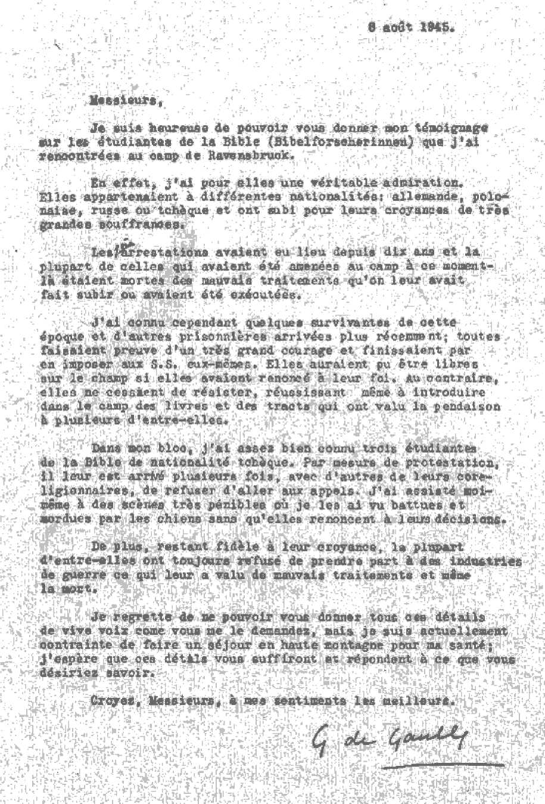

THERE IS NO ROOM FOR PESSIMISM in this booklet, according to its title. By a timely providence the real secret of gladness in the midst of the worst times of this world’s history has been discovered, and it is made public on the following pages.
YOU CAN BE ONE of the only happy and joyful people on earth today. It’s just up to you now to read this booklet, the title of which is an honest invitation to you to be glad for all time to come.
— THE PUBLISHER
COPYRIGHT, 1946 AND PUBLISHED BY
WATCHTOWER
BIBLE AND TRACT SOCIETY, INC.
International Bible Students Association
Brooklyn, N. Y., U. S. A.
Made in the United States of America
LONG ago a king wrote at the time when the land of his nation was at rest, and said: "Light is sown for the righteous, and gladness for the upright in heart." — Psalm 97:11, according to the American Standard Version.
The political nations of today are reaping the fruitage of what they have sown in past years. From the world condition at present it is very plain that they did not sow that which produces the true gladness of the nations and peoples. However, it is claimed that the defeat of the leading totalitarian political powers in the global war has checked the powers of darkness and has caused light to break over many parts of the earth. Evidently the light meant is what light modern democracy has to give. For this political benefit the democratic-minded peoples feel that the oppressed nations should be glad and grateful.
The postwar period of the world has entered with the democratic powers on top; but are these democratic nations of the liberation forces glad? Aside from the initial gladness they felt in their defeat of the totalitarian oppressors, are they glad over the problems new and old that fall to their lot in the peace period? And are the defeated totalitarian nations glad for the new political direction in which the democratic powers have been trying to guide them?
Do all the religious systems of the world rejoice at the triumph of the democratic powers?
Each one may answer these questions according to his own observations and information. But this much can be said without fear of contradiction: After sixteen hundred years of religion, "Christendom," which combines both totalitarian and democratic powers, is not rejoicing.
Inside and outside of "Christendom" there is continuous distress of nations, with perplexity as to the most suitable course to take, and the nations are under a continual nightmare of fear of the future. There is great dread at the shapes of things which appear due to come upon the earth according to the irresistible drift of world affairs. Racial hatreds still prevent any amiable relationship of the human family. The world-wide household of religion is divided against itself with conflicting sectarian schemes and ambitions and religious prejudices, jealousies and rivalries. There are sharp clashes of organized labor with capital and management. The whipped nations, tasting the bitterness of defeat in total war, were dazed at their downfall and now suffer hurt feelings at the blow to their national pride and nurse revenges. Various trouble zones of the earth call for political compromises and for setting up international commissions and trusteeships. Mountain-high war debts burden the governments for generations of taxpayers to dispose of; and desolations, the grim reminders of war and aggression, require decades of time to rebuild. Poverty, unemployment, ignorance, hunger, want, disease, oppressions, calamities, and death still haunt all parts of the earth. As a whole, the world-wide situation denies that the postwar "new order" has ushered in the promised "four freedoms", freedom from fear, freedom from want, freedom of expression, and freedom of worship. Why, then, should nations and peoples rejoice more now than before the global-war of 1939 or the first world war of 1914?
Since A.D. 1914 has been a time of world-changing events, and it is certainly reasonable that this period must be marked in prophecy, not man's fallible political prophecy, but sacred prophecy that is inspired by the Creator of both earth and man. At a time that meant great international changes within the land of Palestine the prophet Moses was inspired to compose a song to be preserved for the time to come, the time of its fulfillment according to the word of Almighty God. In the finale of the prophetic song Moses sang out: "Rejoice, 0 ye nations, with his people: for he will avenge the blood of his servants, and will render vengeance to his adversaries, and will make expiation for his land, for his people." (Deuteronomy 32: 43, Am. Stan. Ver.) Later, by more than a thousand years, a faithful student of prophecy, the apostle Paul, looked at the new course of events. He was inspired to call attention then to the partial beginning of the fulfillment of Moses' prophecy, quoting it and saying: "And again he saith — Be glad, ye nations, with his people." (Romans 15:10, Rotherham's translation) We today, however, are living at the time of the complete fulfillment of this triumphant cry to the nations to be glad and rejoice with a special people.
Confronted with the present situation of the world, why should any or all of the nations of the world rejoice? Should they be glad because mankind has entered the so-called "atomic age" with the release of the first atomic bombs upon the totalitarian adversaries in 1945? The Allied or United Nations have set themselves to win the peace by bringing forth a United Nations Charter and a world organization backed by force for international peace and security; and should the nations be glad for this? Should they be glad because the most fundamental provision of the Charter is for "the right of all people to choose the form of government under which they will live"? Furthermore, with which special people should the nations be glad? With the liberal, democratic people? Or with any particular religious sect, Catholic, Protestant, Jewish, or other?
None of these human-originated schemes or systems furnish the set of facts over which the divine prophecy bids the nations be glad. The test of time, and the strains and stresses of coming world developments, will yet prove such things to be a false basis for gladness and hence to be a failure and disappointment in the most trying and crucial period of human history thus far. None of such things were the reasons for which the apostle Paul could mark the beginning of the prophecy's fulfillment nineteen centuries ago. That our minds might be at once and now set at rest upon the subject under question, let it here be stated: The transcendent reason for which the Lord God Almighty by his inspired mouthpieces called upon the nations to rejoice and be glad is the establishment of the kingdom of God and the operation of it for the vindication of God's universal sovereignty and his sacred name. Such reason for the joy and gladness of all nations is true, indestructible and enduring; and this means that all the universe will yet be filled with everlasting gladness.
Nineteen centuries ago the nations to whom the news came were able to be glad because God's anointed King had been chosen, had proved worthy of the office, had been glorified, and was looking forward to the time of his actively taking office in the kingdom of God. Hence the apostle Paul quoted further prophecies, saying: "And again, Praise the Lord, all ye nations; and let all the peoples praise him. And again, Isaiah saith, There shall be the root of Jesse, and he that ariseth to rule over the nations; on him shall the nations hope." (Romans 15: 11, 12, Am. Stan. Ver., margin) In our day, after many centuries of waiting, the nations to whom the news comes can be glad as never before, because the kingdom of God has been set up. It has taken its power, and its activities have begun for the enforcement of God's universal sovereignty in the earth and for the vindication of his holy name. The proof of this is convincing, being based on solid fact and truth which grow stronger with the passing of time and events.
For about six thousand years righteous men of faith and vision have looked forward to this wonderful turning point in human affairs. Their faith and vision were based upon the unchangeable promise of God made at the very start of mankind's sorrowful course. The record of this promise is found in Sacred Writ, at Genesis 3:14,15, in these words: "And Jehovah God said unto the serpent, Because thou hast done this, cursed art thou above all cattle, and above every beast of the field; upon thy belly shalt thou go, and dust shalt thou eat all the days of thy life: and [now mark the promise] I will put enmity between thee and the woman, and between thy seed and her seed: he shall bruise thy head, and thou shalt bruise his heel." — Am. Stan. Ver.
The literal, visible serpent on the ground was not the guilty creature to whom the inducing of mankind into disobedience against their Creator Jehovah God was due. Other parts of the Bible give the name Serpent or That Old Serpent to another creature, not the subhuman snake on earth, but the superhuman spirit creature, the mighty adversary of God and man, namely, Satan the Devil. — See Revelation 12: 9; 20:2; Matthew 3: 7; 23:33; John 8: 44.
Just as it was not the literal fleshly serpent and its brood to which the great Judge Jehovah referred, just so too it was not Adam's wife, the fleshly woman Eve, nor any of her fleshly daughters, to whom God referred in his promise. The woman of God's promise is a spiritual "woman", namely, God's organization of faithful heavenly creatures and which holy organization is unbreakably united to him and serves in subjection to him, just as a human wife serves her husband. Speaking to this "woman" in the prophecy of Isaiah, God says in figurative language: "For thy Maker is thy husband; Jehovah of hosts is his name: and the Holy One of Israel is thy Redeemer; the God of the whole earth shall he be called." — Isaiah 54:5, Am. Stan. Ver.
This spiritual organization (or woman) and the spiritual Serpent, Satan the Devil, are the ones between whom Jehovah God put enmity or hatred, also enmity between the offspring of his "woman" or organization and the offspring of the great Serpent. That meant war; and as long as that old Serpent and his brood exist there must be war in harmony with God's declaration of war. No single nation, by seizing world control, nor any League of all the nations of this world can halt that war or bring universal peace. The glory for such a humanly impossible accomplishment shall go neither to "Christendom" nor to all the nations of the world. Jehovah God, who declared the war to the finish between His organization and the Serpent's organization, appointed the One to bring about the everlasting universal peace. Jehovah said the Seed or Offspring of his organization would bruise and crush the Serpent's head, even after having suffered a heel wound from the Serpent's murderous fangs. The great issue involved in the war, therefore, was the universal sovereignty, and who shall wield it, Jehovah . God or Satan his adversary? In order to settle the issue, Almighty God permitted Satan the Devil to continue living and to bring forth his wicked seed or offspring.
That old Serpent, Satan the Devil, corrupted other spirit creatures to join him and become like him and thus to become his seed; and he was therefore called "the prince of the demons". With all possible scientific development of the atomic bomb as a weapon of warfare, the political governments of the world will be unable to touch Satan and his demons and crush his head. Not even with their most powerful electronic microscope are they able to peer into the spirit realms of Satan and his demons to fight with them, and to dislodge Satan the Devil from being "the god of this world", as the Holy Scriptures call him. The political rulerships in this postwar period will continue to lie in the position where the Bible locates them, saying, at 1 John 5:19: "The whole world lieth in the evil one." (Am. Stan. Ver.) Or, otherwise stated: "The whole world is under the power of the evil one." (An Amer. Trans.) Seeing that the rulerships lie under the power of that wicked Serpent, then when the Serpent's head is crushed will the world and its rulerships be crushed with him? To this question the inspired Scriptures give a definite answer, and the fate of the national systems that have survived the global war is therefore not one over which any sacred prophecy could call upon them now to be glad and rejoice.
Not only fallen angels but also humans became filled with the spirit of Satan the Devil and have thereby become part of the seed or offspring of the Serpent. Cain, the first child of the sinners Adam and Eve, early showed himself to be part of the Serpent's seed by killing his God-fearing brother Abel. Hence we are warned in the Bible to be "not as Cain, who was of that wicked one, and slew his brother. And wherefore slew he him? Because his own works were evil, and his brother's righteous". (1 John 3:12) From Cain's time on, the seed of the Serpent have increased in the earth. It is they that have fought against the offspring of God's woman or against everyone that has looked for and believed in the woman's Seed. This they have done under the power and influence of Satan and his demons; and in every case it has been the Serpent's effort to get at the woman's seed and to stave off the bruising of his wicked head by her seed.
But God's time for the bruising of the Serpent's head is unchangeably fixed. It is now quite near, and for this reason the nations have the greatest cause to rejoice and be glad. Satan and his wicked demons have acted as an evil heavens over humankind, because they are "the spiritual hosts of wickedness in the heavenly places". (Ephesians 6:12, Am. Stan. Ver.) On the other hand, the Serpent's visible human seed have acted as an evil earth or earthly organization to oppress all humankind and to oppose Jehovah God and his purpose concerning the seed of his "woman". Together, such evil heavens and earth make up this wicked world. Hence the crushing of the Serpent's head means the destruction of this bloodstained, sin-laden, oppressive world of which Satan is the invisible head. This will be a blessing to all lovers of righteousness on earth such as none of the political powers of earth can bring. Only the Seed of God's "woman" is ordained and will be able to accomplish this blessing.
In order that humankind might be able to rest their hopes in the right seed and not be deceived by counterfeit deliverers and emancipators of mankind, Jehovah God began revealing the line of descent by which the Seed should come. The man Abraham came under his attention because of faith and obedience toward Jehovah God. Abraham forsook his homeland and followed God's leadings to a new land, where he sojourned as a free man under God and dwelt in tents outside the local cities. Abraham was able to take this course of action because he looked not at man-made cities and governments for deliverance from this evil world, but looked for a "city" or government which has lasting foundations, "whose builder and maker is God" and not some totalitarian dictators or democratic rulers. (Hebrews 11:8-10) For this reason Abraham was called "the friend of God", and to him Jehovah God said: "I will make of thee a great nation, and I will bless thee, and make thy name great; and thou shalt be a blessing: and I will bless them that bless thee, and curse him that curseth thee: and in thee shall all families of the earth be blessed." (Genesis 12:2,3) This meant that the gracious God has in store a blessing for all the nations of the earth, over which the nations should be glad when it comes. But it is a blessing only to those who blessed Abraham, that is, those who blessed the great God whom Abraham believed and served and represented on earth, namely, Jehovah.
This promise or covenant to Abraham that God would make of him a great nation meant that Abraham would have a seed, and that through this seed the blessing and gladness would go to all other nations of the earth. God made this truth certain to Abraham later when Abraham obeyed God's directive to sacrifice his beloved only freeborn son Isaac. Then God said to Abraham: "By myself have I sworn, saith Jehovah, . . . Thy seed shall possess the gate of his enemies; and in thy seed shall all the nations of the earth be blessed; because thou hast obeyed my voice." (Genesis 22:16-18, Am. Stan. Ver.) Such covenant promise meant that the seed of Jehovah God's "woman" would come through Abraham's line of descent, and that this seed would gain the victory over the enemies of God and his woman; and that consequently a blessing would go to all the nations of the earth. The fulfillment of this blessing was certain to cause rejoicing and gladness among all nations, but not among the Serpent's seed.
To Abraham's grandson Jacob God repeated the covenant promise, saying to Jacob from the top of the ladder reaching to heaven which Jacob saw in his dream: "In thee and in thy seed shall all the families of the earth be blessed." (Genesis 28:14) Jacob looked ahead to the coming of that seed of blessing, and when he was dying down in Egypt he blessed his twelve sons. On this occasion he said to his son Judah: "The sceptre shall not depart from Judah, nor the ruler's staff from between his feet, until Shiloh [the Peaceful One] come; and unto him shall the obedience of the peoples be." (Genesis 49:10, Am. Stan. Ver.) That meant that the nations would gather unto the God-appointed One who would bring them His blessing and that they would gladly render their obedience to him.
The descendants of the twelve sons of Jacob or Israel formed the nation of the twelve tribes of Israel; and in due time their God Jehovah brought them out of Egypt by the hand of Moses and led them to the Jordan river boundary of the Promised Land. It was then that the prophet Moses sang his prophetic song for a witness to Jehovah and as a witness against all -disobeying him; and it was then that Moses sang out the exhortation to all nations to be glad with God's favored people. At that same time he disclosed that a Greater Moses was to come, saying to the Israelites: "Jehovah thy God will raise up unto thee a prophet from the midst of thee, of thy brethren, like unto me; unto him ye shall hearken; . . . And it shall come to pass, that whosoever will not hearken unto my words which he shall speak in my name, I will require it of him." (Deuteronomy 18:15-19, Am. Stan. Ver.) Hence in our day it is the Greater Moses that speaks and calls upon all the nations to be glad with God's people; and he does so when we are at the border of the long-promised New World. That Greater Moses, who extends this invitation to the nations to be glad, is Christ Jesus. God has exalted him to be the "Commander to the peoples", and his commands must be obeyed by all those hoping for life in the New World. In the apostle Paul's day that Greater Moses had appeared and had commanded his followers to go into all the world and unto all nations with his message. Hence Paul quoted Moses' call for the nations to rejoice as having begun its fulfillment in Paul's day.
Eventually, within the Promised Land, a kingdom was set up over Jehovah's chosen nation of Israel, and the scepter came into the hands of the tribe of Judah, as God had promised. David, the son of Jesse, became the first king of the line of Judah, and was succeeded by his son Solomon. Because of David's faithful concern for the worship of Jehovah God, an everlasting covenant for the Kingdom was made with David. As to this Kingdom covenant, Jehovah God's Word says: "My covenant will I not break, nor alter the thing that is gone out of my lips. Once have I sworn by my holiness: I will not lie unto David: His seed shall endure for ever, and his throne as the sun before me. It shall be established for ever as the moon, and as the faithful witness in the sky." — Psalm 89: 34-37, Am. Stan. Ver.; 2 Samuel 7:12-16.
There now was God's promise that the Seed of his "woman", the Seed of Abraham, by whom the Serpent's head was to be bruised and all nations were to be blessed, would certainly come from the line of David, the son of Jesse. Hence this Seed would be called "the Son of David", and he would be Jehovah's anointed King in the everlasting heavenly kingdom of God. It is therefore the establishment of the Theocratic Government of Jehovah God by his anointed King for which the prophetic song bids the nations to be glad. Using anything else in this postwar epoch as a pretext for the nations to rejoice is certain to prove a fraud and delusion, and the rejoicing over such will be short-lived. Instead of following the worldly leaders who try to work up gladness in the people's hearts at the political, commercial and religious achievements by men, the nations should listen to the Greater Moses, and then their joy will be for ever!
The "Son of David", who became the everlasting Heir of the Kingdom covenant, is the Anointed Jesus, or Christ Jesus, who was a descendant of King David by the virgin Jewess, Mary, and hence also a descendant of Abraham. That Christ Jesus is the foretold Seed of Abraham is testified to us under inspiration by the Scriptures; as it is written, at Galatians 3:8,16; to quote: "And the scripture, foreseeing that God would justify the Gentiles by faith, preached the gospel beforehand unto Abraham, saying, In thee shall all the nations be blessed. Now to Abraham were the promises spoken, and to his seed. [God] saith not, And to seeds, as of many [seeds]; but as of one [seed], And to thy seed, WHICH IS CHRIST." (Am. Stan. Ver.) Hence the scripture goes on to say to the anointed followers of Christ Jesus: "Ye are all sons of God, through faith, in Christ Jesus. ... ye all are one man in Christ Jesus. And if ye are Christ's, then are ye Abraham's seed, heirs according to promise." (Galatians 3:26-29, Am. Stan. Ver.) And so Christ Jesus is primarily the promised "seed of Abraham"; and all his followers who are adopted as spiritual sons of God are made the associates of the one "Seed of Abraham". The real Abraham from whom the Seed and his associates come is the great Father, Jehovah God, who was typified or foreshadowed by his friend Abraham on earth. He is the divine Source of all blessing and gladness.
The only begotten Son of God, who became Christ Jesus, came down from heaven and thus came down from God's heavenly universal organization, God's "woman". His anointing with the spirit or active force of God was made manifest at the time that he was baptized in the Jordan river, at which time Jehovah's voice came from heaven, announcing: "This is my beloved Son, in whom I am well pleased." (Matthew 3:15-17) When God thus confessed to Jesus' spiritual sonship, there God's symbolic woman or heavenly organization brought forth her Seed, promised long ago in the garden of Eden by Jehovah God. Hence the great Serpent, Satan the Devil, together with all his seed or brood, at once set upon Christ Jesus in order to do worse to him than merely bruise his heel. But all they proved able to do at most was just to 'bruise the heel of the woman's seed', for God Almighty prevented their wounding of Christ Jesus from being eternally fatal, by raising him up from the dead to divine spirit life in the highest heavens. (1 Peter 3:18, Am. Stan. Ver.) Hence the glorified Seed of God's "woman" lives immortal, and by him the bruising of the Serpent's head and the crushing of all his wicked brood must take place in God's appointed time, and that very near now. Because the faithful followers of this Seed of God's "woman" are to be associated with him in his victory, therefore it is written to them, at Romans 16: 20: "And God, who is the source of peace, will soon crush Satan under your feet." — An American Translation.
When the Seed of God's heavenly woman came down to earth and became the Seed of Abraham and Son of David, he did not then become heir of the earthly kingdom over which King David ruled. He did not take up David's literal scepter nor sit upon the material throne upon which David once sat at Jerusalem. No; that earthly kingdom of David had passed away in the late summer of the year 607 B.C., when Jerusalem was destroyed for" the first time by the heathen emperor Nebuchadnezzar and the surviving Jews were carried away to his country of Babylon. At that date the "times of the Gentiles" began over all the earth and continued down through Jesus' day, because even at Jesus' time Jerusalem had not gained her independence from Gentile domination but was under the heavy heel of Gentile Rome. Jesus predicted the continuance of these oppressive Gentile times far beyond his own day, saying: "And [the Jews] shall fall by the edge of the sword, and shall be led away captive into all nations: and Jerusalem shall be trodden down of the Gentiles, until the times of the Gentiles be fulfilled." — Luke 21: 24.
The duration of those "times of the Gentiles" could be interrupted and ended only by the fulfillment of God's kingdom covenant and hence by the setting up of the kingdom of God in the hands of his anointed King, Christ Jesus the Son of David. Hence, when Jesus was on earth he preached no earthly kingdom over earth and men and nations, for no such earthly kingdom could crush the superhuman Serpent's head nor bring the blessings and the gladness to all the nations. From the start Jesus preached: "The time is fulfilled, and THE KINGDOM OF GOD is at hand: repent ye, and believe the gospel." "Repent: for THE KINGDOM OF HEAVEN is at hand." (Mark 1:15; Matthew 4:17) By this he did not mean that the time had then come to end the "times of the Gentiles" and to set up a kingdom at Jerusalem as capital. Jesus simply meant that he, the anointed King and the chief representative of the coming kingdom of God, was at hand and was in the midst of the Jewish nation. (Luke 17:21) God's kingdom was all wrapped up in him.
Jesus knew that the setting up of God's kingdom and God's putting of this kingdom in active power could not take place before the ending of the "times of the Gentiles". God's prophecy to Emperor Nebuchadnezzar, at Daniel chapter four, shows that those Gentile times would be "seven times", symbolizing 2,520 literal years from and after the destruction of Jerusalem in 607 B.C. Therefore when Jesus stood trial before the Roman governor Pontius Pilate, and the religious priests and clergymen accused him of plotting to set up a kingdom over the Jews independent of Caesar's control, Jesus said to Pilate: "My kingdom is not of this world: if my kingdom were of this world, then would my servants fight, that I should not be delivered to the Jews: but now is my kingdom not from hence." — John 18: 36.
Jesus knew that for him to enter into the kingdom of heaven at the end of the Gentile times he must die faithful to the interests of God's kingdom and must lay off this earthly life in order that he might return to the spirit life he had enjoyed in heaven before becoming a man. At the same time he would be laying down and sacrificing his human existence as a ransom price to redeem dying humankind and to expiate their sins. Thus by the Anointed King in the kingdom of God there must come to believing and obedient men the deliverance from all the evil effects, including sin, imperfection and death, which were due to the Serpent's wicked course in the garden of Eden. Therefore the gladness of the nations is obliged to be in the kingdom of God; for no political government or union of governments on earth can bring such lasting, vital benefits to the nations.
Now we are prepared to consider a great joy-inspiring truth. Christ Jesus, according to God's decree, could not come into the active Kingdom power until the "times of the Gentiles" ended. From this standpoint the apostle Paul wrote, saying: "Christ has offered for all time one sacrifice for sin, and has taken his seat at God's right hand, from that time waiting for his enemies to be made his footstool." (Hebrews 10:12,13, An Amer. Trans.) In order for Jesus' faithful followers on earth to know that their waiting for the Kingdom had ended, they must know that it had been set up in power and authority. Likewise, for the nations of earth to be glad over that fact, they too must know about it. When Jesus' disciples privately asked him, "Tell us, when shall these things be? and what shall be the sign of thy coming, and of the end of the world!" Jesus answered them with a detailed prophecy, as recorded at Matthew chapters 24 and 25, Mark chapter 13, and Luke chapter 21. Thus Christ Jesus, God's Prophet greater than Moses, foretold and prophesied how we might know that the Kingdom had been set up and that he had come into Kingdom power and so we might become witnesses to that fact among all the nations.
Warning his followers against false Christs and false Messiahs, Jesus covered the events of the then remaining years of the "times of the Gentiles" by saying: "And when ye shall hear of wars and tumults, be not terrified: for these things must needs come to pass first; but the end is not immediately." (Luke 21:9, Am. Stan. Ver.) Such words of Jesus answer the careless argument of men who say, 'Aw, we have always had wars and troubles, and it never meant the end of the world!' But now, after having mentioned the long period of wars and tumults which did not spell the end of the world and his coming into the Kingdom, Jesus then prophetically described the visible proof or sign of the end of Satan's world and of the coming of God's kingdom. The Bible record at this point reads: "THEN said he unto them, Nation shall rise against nation, and kingdom against kingdom; and there shall be great earthquakes, and in divers places famines and pestilences; and there shall be terrors and great signs from heaven. But before all these things, they shall lay their hands on YOU, and shall persecute you, delivering you up to the synagogues [councils] and prisons, bringing you before kings and governors for my name's sake. It shall turn out unto you for a testimony." — Luke 21:10-13, Am. Stan. Ver.
Let men answer for themselves whether we have had such rising up of total nation against total nation and regimented kingdom against regimented kingdom, all at one time, in an international world war, democratic nations against authoritarian nations, and constitutional kingdoms against autocratic kingdoms. Has such a world conflict been accompanied and followed by destructive earthquakes, food shortages, widespread pestilences, and other horrors and terrors from above and below? And before all these things are over with, have the war-wracked governments and religious authorities arrested and persecuted and handed over to courts and to rulers Christ's faithful followers who persisted in preaching the kingdom of God?
Only the disdainful egotist and the religiously prejudiced person will brush aside and ignore the honest testimony of history, that these momentous things began in combination A.D. 1914. Only the religious zealots and superpatriots who approved of and took part in such things will deny that the persecution and mistreatment of his Christian followers which Jesus foretold to come upon them during and after the world war have come in appalling measure upon Jehovah's witnesses, and the record thereof now lies as an ugly blot of shame upon the pages of America's history and the history of all the other nations of "Christendom".
The stubborn unbeliever is merely blinding himself to truths and is simply begging the question when he stoutly argues that the tragic events since A.D. 1914, although on a grander scale than heretofore, mean no more than previous wars and troubles of humankind did. They DO mean more. They mean just what Jesus said they mean. They prove that he is a true prophet, the Greater Moses. These combined events have not taken place at any accidental time in human history. No; but these gripping world-wide events have rushed in pell-mell upon this generation at a marked time, at a date that stood definitely marked for 2,520 years, namely, the date marking the end of the "times of the Gentiles". These "seven times" of Gentile domination began when the Gentile conqueror Nebuchadnezzar trod down and destroyed Jerusalem and her sovereign domain in 607 B.C., and hence their 2,520 years of duration ran out in the late summer of A.D. 1914. That was the time for the interrupting of those times of the Gentiles of Satan's world by the establishment of the kingdom of God in the hands of the Seed of God's "woman". The heavenly kingdom WAS established there, for God's times and seasons are unchangeable.
Therefore it was no meaningless happening nor was it any chance coincidence of history that World War I began in the summer of 1914, introducing an era of worsening distress of nations, perplexities, rising fears, and uncontrollable situations, that have continued down to this date, over thirty years thereafter; and the solution of these things by human wits fades more and more from view. Of these things Jesus said: "All these are the beginning of sorrows." (Matthew 24:8) Hence human governments, financial experts, electronic scientists, and religious clergymen indulge in a lot of self-deception when they assure themselves and others that they will master the problems and bring an end of the sorrows and create a new world by human hands.
The afore-quoted words of Jesus are just the introductory words of his prophecy and are not all there is to the long description of events that he gave in answer to his disciples' questions. He made a side-reference to the prophet Daniel's prediction concerning this same time, and said: "When ye therefore shall see the abomination of desolation, spoken of by Daniel the prophet, stand in the holy place, (whoso readeth, let him understand:) then let them which be in Judaea flee into the mountains: . . . for then shall be great tribulation, such as was not since the beginning of the world to this time, no, nor ever shall be." — Matthew 24:15-21.
Can we "understand" what we "read"? Yes, by the Scripture truths and the historic facts which God supplies for the interpretation. So then, besides all the things already mentioned which we have experienced since the close of the Gentile times in 1914, do we see now the "abomination of desolation" standing in the "holy place" where it ought not to stand? God's kingdom is clean and holy, and its place as the rightful ruler of this earth from the end of the times of the Gentiles in 1914 is the "holy place". But the political, financial, and religious heads and leaders of "Christendom" do not admit that fact, despite all the recent world events. To the contrary, they -all band together to help one another to hold on to their human rulerships. They form a world association, league or union of nations to strengthen and perpetuate the political rulership of the earth, which is not their God-given right. Therefore, they are unlawfully 'standing in the holy place'; and Satan, "the god of this world," is pleased to have them do so. No wonder, then, that this worldly arrangement of post-Gentile times is an "abomination" in God's sight and that it therefore brings upon the world terrible desolation from God's hand!
For these very reasons our eyes of understanding now see the foretold "abomination of desolation" standing up in power in the "holy place" in defiance of God's universal sovereignty. This in itself, said Jesus, is evidence enough for us to take to flight to God's refuge as symbolized by the "mountains". Therefore this extraordinary feature, an "abomination" which has never before marked world history, we have as another evidence in addition to all the foregoing physical facts which Jesus said were the "beginning of sorrows". And all this we have since the expiration of the Gentile times in 1914!
Everybody who thinks must ask the question, What truly is the meaning of this combination of events and developments all packed into our day since 1914? The united answer of Jehovah's Word and of Jesus' prophecy and of sanctified reason is that it means, The kingdom of Jehovah God by his anointed King Christ Jesus has been established in the heavens and its power has been directed toward this earth for the restoration of Jehovah's Theocratic rule over this entire globe. It means that the time for the crushing of the Serpent's head by the Seed of God's woman has drawn near, and that deliverance from the Serpent and all his deadly brood is nigh.
The twelfth chapter of Revelation long ago gave a symbolical picture of the birth of God's kingdom from the womb of his "woman" or organization in 1914. It shows that, immediately after the putting of the King on the throne, war must break out in the heavens against Satan and all his demons up there. According to this Revelation, the war has gone against the Devil and his wicked angels,
and God's empowered King has forced them down out of heaven and penned them all up at this earth. To quote the inspired record itself: "And the great dragon was cast out, that old serpent, called the Devil, and Satan, which deceiveth the whole world: he was cast out into the earth, and his angels were cast out with him. And I heard a loud voice saying in heaven, Now is come salvation, and strength, and THE KINGDOM OF OUR GOD, AND THE POWER OF HIS CHRIST: for the accuser of our brethren is cast down, which accused them before our God day and night.... Therefore rejoice, ye heavens, and ye that dwell
in them. Woe to the inhabiters of the earth and of the sea! for the devil is come down unto you, having great wrath, because he knoweth that he hath but a short time." — Revelation 12: 9-12. -
Who, then, on earth is it that rejoices over the understanding of these facts, regardless of the woe, including the global war of 1939-1945, that Satan the Devil has been bringing on the earth since his being cast out of heaven? Said Jesus to his followers in his prophecy on the end of Satan's world: "And when these things begin to come to pass, then look up, and lift up your heads; for your redemption [your deliverance] draweth nigh....
Behold the fig tree, and all the trees; when they now shoot forth, ye see and know of your own selves that summer is now nigh at hand. So likewise ye, when ye see these things come to pass, know ye that THE KINGDOM OF GOD IS NIGH AT HAND. Verily I say unto you, This generation
shall not pass away, till all be fulfilled." — Luke 21: 28-32.
This great Prophet, the Greater Moses, is the One who now speaks in the day of the complete fulfillment and says, "Be glad, ye nations, with his people." The expression "his people" means Jehovah's chosen people, because Moses was Jehovah's prophet and Christ Jesus is Jehovah's Greater Prophet like unto Moses. Most certainly the nations cannot be glad with the pontiff of Vatican City; for the pope is not glad over world events since 1914, according to his frequently reported whinings about his "anguished heart". Neither can all the nations be glad with the various religious sects and cults, Catholic, Protestant, Jewish, or other, because none of these have any faith in the world's end - and none of them have eyes of understanding to see and rejoice in the coming of God's kingdom by Christ Jesus. Who, then, are "his people" today with whom the nations are called upon to rejoice? The facts in answer are undeniable; and the factual answer to the question is, JEHOVAH'S WITNESSES, the people despised by and persecuted by the governments of all the nations and religious systems of the world, as Jesus foretold that they would be at this time. — Matthew 24: 913; Luke 21:12-17.
Jehovah's witnesses, the people in covenant relationship with Jehovah God today, are the ones who are rejoicing with gladness because of world events since 1914, even in spite of their own severe persecutions. They have been long looking forward to the coming and the progressive development of these events according to the prophecy, and behold the events are here! They rejoice and are glad, with joy irrepressible, because these events mean that in 1914 Jehovah God took to himself his almighty power respecting this earth and began reigning by installing his anointed King, the Seed of his "woman", on the throne. This fact is more important than all the suffering of the peoples who refuse God's holy kingdom. God's kingdom by Christ is of supreme importance; for it will vindicate Jehovah's universal sovereignty and name against the wicked Serpent and all his seed. That vindication will result in an everlasting blessing to all lovers of righteousness in heaven and in earth.
No one can accuse Jehovah's witnesses of selfishly keeping their joy to themselves. The command of their Greater Moses, "Be glad, ye nations, with his people," forbids their keeping quiet or hiding from the public the cause of their overflowing joy. Jehovah's witnesses know that, if the command of the great "Commander to the peoples" is for the nations to rejoice with Jehovah's people, then they must share their joy with the nations and must therefore go forth to the nations and give them a witness concerning Jehovah God and his universal sovereignty and his newly established Kingdom. For how can the nations be glad with Jehovah's witnesses unless they have a chance to hear and learn and believe in this joyful good news? These logical reasonings explain the why and wherefore of the irresistible publishing campaign of Jehovah's witnesses since the year 1919, immediately after the close of World War I.
This very world-wide publicity campaign of Jehovah's witnesses, which has angered all the political rulerships and stirred up tremendous religious persecutions against them in all lands, was foretold also by Christ Jesus, the Greater Moses. Immediately after describing World War I and the experiences of his followers in his prophecy, Jesus said: "And this gospel of the kingdom shall be preached in all the world for a witness unto all nations; and then shall the end come"; and that end means the bruising of the Serpent's head. (Matthew 24:14) It follows, therefore, that the world-known preaching of God's established kingdom by Jehovah's witnesses, both from public platform, and by radio, and by printed page, and from house to house, and under persecutions, in all nations, is but another clinching proof that Jehovah's kingdom by Christ Jesus has come since 1914. Thus the evidence of that joy-laden fact is strengthened all the more in our convictions.
So, then, Jehovah's prophet Moses did not sing forth in vain, "Be glad, ye nations, with his people." This day vindicates those inspired words; for Jehovah's witnesses are faithful to their obligations and consequently the nations are hearing the glad news. This does not mean that the various national political governments and their religious and commercial backers are glad and are rejoicing to hear the good news of Jehovah's established kingdom by Christ Jesus. Not at all! But those political governments and their backers are all marching whither Revelation 16:14-16 describes them to be marching, namely, to the battle of Armageddon, "the battle of that great day of God Almighty." That battle will bring everlasting grief to them, for it will for ever clear them out of the "holy place" where they have jointly been making a blasphemous stand, and they will be destroyed by the woman's Seed who bruises the Serpent's head at Armageddon. —See Revelation 19:1121; 20:1-4.
"Ye nations," who are called upon to rejoice and be glad with Jehovah's people, means therefore the individual persons of various nationalities, yes, of all nationalities to whom the message comes. God is no respecter of persons, but commands and sends forth his witnesses to all "nations or nationalities in all the habitable earth.
But be assured of one thing, "ye nations." You will never rejoice and be glad with the covenant people of the great universal Sovereign Jehovah God if you refuse to listen to his witnesses and refuse their printed message from Jehovah's Word. The political governments and the religious priests and clergymen will relentlessly strive to prevent, discourage and dissuade you from giving ear and attention to what Jehovah's witnesses bring to you. But Jehovah's Greater Moses, the King Christ Jesus, commands now: "Be glad, ye nations, with his people." If you obey the Redeemer of humankind and the King of the New World of righteousness, you will investigate the joy of Jehovah's people. Then you too will be able to rejoice with them over the glorious kingdom of God now set up in power and now put in action for the fulfillment of all his good purposes.
"Ye nations," for your encouragement it is written, at Psalm 67:3-7: "Let the peoples praise thee, 0 God; let all the peoples praise thee. Oh let the nations be glad and sing for joy; for thou wilt judge the peoples with equity, and govern the nations upon earth. Selah. Let the peoples praise thee, o God; let all the peoples praise thee. The earth hath yielded its increase: God, even our own God, will bless us. God will bless us; and all the ends of the earth shall fear him." (Am. Stan. Ver.) And concerning the kingdom of God by Christ, which establishes itself in power over the earth, it is also written for your encouragement and guidance: "The glory of God did lighten it, and the Lamb [Christ Jesus] is the light thereof. And the nations of them which are saved shall walk in the light of it." (Revelation 21: 23, 24) Will you be one from among those nations that are saved? Then walk in the light and be glad.
THEsE people called "Jehovah's witnesses" — are they true or false? Concerning them the Roman Catholic Hierarchy says: "They have no evidence whatever that Jehovah ever asked them to be His witnesses."*
But that there would be such witnesses on earth at this crucial time when the nations are being gathered into a united global organization is stated by the Lord God himself, in His own prophecy at isaiah 43:9-12, in these words: "Let all the nations be gathered together, and let the peoples be assembled: who among them can declare this, and show us former things! let them bring their witnesses, that they may be justified; or let them hear, and say, it is truth. Ye are my WiTNEssEs, saith JEHOVAH, and my servant whom i have chosen; that ye may know and believe me, and understand that i am he: before me there was no God formed, neither shall there be after me. i, even i, am Jehovah; and besides me there is no saviour. i have declared, and i have saved, and i have showed; and there was no strange god among you: therefore ye are my WiTNEssEs, saith JEHOVAH, and i am God." (Quoted from the American standard Version; see also Young's and Rotherham's version) The Lord God declared his name JEHOVAH to the prophet Moses. (Exodus 3:13-15; 6:2,3. Am. stan. Ver.) He said that the
* Radio Replies from Catholic Broadcasting station 2sM, sydney, Australia, page 72, 1938 edition, by Cathedral Press.
true representatives of Jehovah God would speak in the name of Jehovah and also that their words would tend to turn the people to Jehovah or would safeguard them from being turned away from Jehovah. Also, they would faithfully bring the Word of Jehovah to the people and would not deprive the people of His Word. (See Deuteronomy 13:1-5; 18:19-22; Jeremiah 23:26-32.) Neither the Roman Catholic Hierarchy nor any other religious sect can deny that the well-known "Jehovah's witnesses" speak in the name of the God whose name is Jehovah. In the true Christian manner Jehovah's witnesses today imitate their Leader Christ Jesus, who said: "I am come in my Father's name"; and Jesus' Father is Jehovah. (John 5:43; 10: 25; 17: 6) It is the complaint of the Roman Catholic Hierarchy that Jehovah's witnesses refer for authority to the Holy Bible, which is the Word of Jehovah God, and that they spread the Bible and its teachings among the people. Furthermore, all the facts are at hand to show that they have turned thousands, not into man-made religious sects and cults either Catholic or Protestant, but into a consecrated relationship with Jehovah God, thus to become part of His covenant people.
Due to faithful adherence to the Holy Bible as their guide and instruction Book, these Christians have been earlier known as "Bible Students" for many years; in German-speaking lands they were known as "Bibelforscher", that is, "Bible Researchers." In 1927 they published, in many languages and by the millions of copies which were freely distributed, a "Resolution to the
Peoples of Christendom", in which the opening paragraphs said: "The International Bible Students in general convention assembled send greetings: As Christians and WITNESSES TO THE NAME OF JEHOVAH GOD we deem it our privilege and duty to call your attention to the following vital facts." And then followed a message of freedom for the peoples from bondage to the Devil's organization of this world. — The Watchtower, October 15,1927, pages 307, 308.
Four years later, or in 1931, these Christian students of God's Word adopted a special Resolution, brushing aside all the names of ridicule and reproach by which they were commonly called, and served notice on the world that they would confess to no such names but would own the Scriptural one, Jehovah's witnesses. (The Watchtower, September 15, 1931, pages 278, 279) But Jehovah's witnesses did not first come into existence then. Christ Jesus, on earth 1900 years ago, was and is the Chief Witness of Jehovah. The Scriptures call him "Jesus Christ, who is the faithful witness", "the faithful and true witness, the beginning of the creation of God," and "who before Pontius Pilate witnessed a good confession". (Revelation 1:5; 3:14; 1 Timothy 6:13; John 18: 37) Christ Jesus suffered for being Jehovah's witness, and concerning such sufferings the apostle Peter writes: "Christ also suffered for us, leaving us an example, that ye should follow his steps." (1 Peter 2:21) Whoever, therefore, serves as a Christian witness of Jehovah cannot escape suffering. Abel, the son of Adam and Eve, was Jehovah's first martyr; and regarding him it is written:
"By faith Abel offered unto God a more excellent sacrifice than Cain, by which he obtained witness that he was righteous, God testifying of his gifts: and by it he being dead yet speaketh." (Hebrews 11: 4) Abel being the first of Jehovah's witnesses on earth, it is foolish ignorance for the Roman Catholic Hierarchy to say that Jehovah's witnesses of today are many hundreds of years "too late for one who seeks the Church actually established by Christ".
It is therefore evident that, in order to establish the identity of any body of professing Christians as being the genuine witnesses of Jehovah, we should look for them to be the objects of great persecutions, buffetings, reproaches, and even death for being such. The Bible declares that the divine purpose in permitting such sufferings is in order to prove Satan to be a liar in denying they are Jehovah's witnesses and in order to prove the integrity of his witnesses toward Jehovah God before all the world, men and angels alike. Concerning these witnesses the same must be said as Jehovah said concerning the faithful man Job: "And still he holdeth fast his integrity, although thou movedst me against him, to destroy him without cause." (Job 2:3) During all their suffering inside the crucible of fiery persecution and reproaches the faithful and true witnesses of Jehovah God must keep an unbreakable grip upon their integrity and devotion to His universal sovereignty and holy name. For so doing, the Lord God will be with his witnesses during the hottest of their trials. He will not let them be destroyed by the wicked enemies, but will bring
them forth as a refined and proved people. As it is written: "But now thus saith Jehovah that created thee, ... I have called thee by thy name, thou art mine. When thou passest through the waters, I will be with thee; and through the rivers, they shall not overflow thee: when thou walkest through the fire, thou shalt not be burned, neither shall the flame kindle upon thee.... I have saved,
and I have showed; and there was no strange god among you: therefore ye are my witnesses, saith Jehovah, and I am God." — Isaiah 43:1, 2,12, Am. Stan. Ver.
Hence now, since the close of the global World War II in 1945, is the time to examine anew these modern-day "Jehovah's witnesses", to determine whether they have suffered and, if so, whether they have suffered for the true issue. For Jesus said, as part of his prophecy on the end of this world, that his genuine followers would suffer in connection with the world war: "Then shall they deliver you up to be afflicted, and shall kill you: and ye shall be hated of all nations for my name's sake But he that shall endure unto the end, the same shall be saved." — Matthew 24: 7-13.
We need not go back to the sufferings of these Christians during the World War of 1914-1918, although the testimony of the record then made by them agrees with Jesus' words. Rather we shall turn to the record which they have made within the knowledge of the new generation that has grown up since that first world war. This record concerns the time that Fascist and Nazi and other totalitarian hordes were belched out like a violent flood of waters to overflow all the earth, and particularly to swallow up the witnesses of Jehovah, who are children of His "woman" or holy organization. According to Revelation 12:15-17, here is what has happened: "And the serpent cast out of his mouth water as a flood after the woman, that he might cause her to be carried away of the flood. And the earth helped the woman, and the earth opened her mouth, and swallowed up the flood which the dragon cast out of his mouth. And the dragon was wroth with the woman, and went to make war with the remnant of her seed, which keep the commandments of God, and have the testimony of Jesus Christ."
The facts show that these Christians entered this extraordinary period of world affliction being definitely known as "Jehovah's witnesses". Have they deported themselves worthily as such during the white heat of the crucible! Have they come forth out of it, from and after 1945, with their identity and their organization as witnesses of the true and living God unsinged, unsullied and unconsumed? Are they vindicated as His preserved and approved people, worthy of our hearing and accepting? And are the Roman Catholic Hierarchy and other religious reproachers and accusers proved to be liars? In reply, let the historic, documented record speak.
As a background it is necessary to mention certain well-known facts. Since World War I was a time of intense Catholic action. Cardinal Ratti, after becoming pope in 1922, was the One to build up and organize what has been officially called "Catholic Action"; and the direction of it, as set out in the pope's encyclical Quadragesimo Anno of 1931, was entrusted specifically to the Jesuit priests. That there was a definite understanding between the Hierarchy of the Vatican and the totalitarian aggressors is clear from the facts next brought to light. A few months after Cardinal Ratti became pope Pius XI, Mussolini seized control in Italy and established a Fascist dictatorship. In 1929 the Mussolini government and the Vatican signed their concordat. Thereby the pope became political ruler over the new created Vatican City, and Pius XI spoke of dictator Mussolini as "a gift of Providence, a man free from the prejudices of the politicians of the liberal school". Later that same year a concordat was made between the Vatican and the militarized German state of Prussia by the agency of Archbishop Pacelli.
As respects this Pacelli, now pope Pius XII, the Americana Annual of 1940 (page 642) says:
After the war, Archbishop Pacelli remained several years in Munich, where he concluded negotiations for a concordat with Bavaria. On 22 June 1920 he moved to Berlin as the first Nuncio accredited to the German republic, and there on 14 -June 1929 he arranged a successful concordat with the dominantly Protestant state of Prussia. On 16 December of the same year he was created cardinal and recalled to Rome by Pius XI. There, on 11 Feb. 1930, he was appointed Papal Secretary of State.
Cardinal Pacelli became such a lover of things German that he came to be known as Il Tedesco, or The German. Through Pacelli's German agent, Monsignor Kaas, it was arranged with powerful Rhineland industrialists that the
Catholic fuehrer of the Nazis, namely, Adolf Hitler, should become chancellor of Germany, provided that he favored the Catholic church during his term of office. Hitler had been defeated by General von Hindenburg in the 1932 elections for the presidency of Germany. Thereafter Chancellor Franz von Papen, a papal chamberlain (now branded as one of the Nazi war criminals), resigned from office, and after him General Kurt von Schleicher; and Hitler was made German chancellor on January 30, 1933, as Cardinal Pacelli had planned. Hitler made von Papen to be his vice-chancellor. On March 5, the day after the inauguration of President Roosevelt in the United States, Hitler won out in a plebiscite of all Germany, and shortly thereafter, on March 23, the German Reichstag voted dictatorship to him.
Let all the people note how Catholic Action now began to show from 1933 on what it would be like if the Vatican succeeded in its program for making all the world Roman Catholic. Interesting to note is that, at the very beginning of that momentous year, namely, on January 18, the Canadian government at Ottawa yielded to religious complaints and put a ban upon all Watchtower broadcasts over the 25 radio stations then being used by Jehovah's witnesses.
On April 2, 1933, the pope inaugurated the so-called "Holy Year". Concerning this "Jubilee and Holy Year" pope Pius XI said, on March 13:
We cherish full and certain confidence that it will be especially, above all, a year of spiritual exaltation for the whole Christian world and for all mankind; and, secondly, a relief, which, God grant, may be an entire cessation, from the hardships and miseries with which the world is still sorely afflicted. — "Allocution Iterum Vos," Principles for Peace, page 473.
Would such papal hopes for mankind's spiritual exaltation and relief during that year 1933 which saw the Fascist and Nazi dictators both firmly seated in political power come true? At the time the Hierarchy was reported in the public press as expressing the hope that the "Holy Year" would usher in a tide of religion that would sweep the nations into peace and prosperity. Would that come to pass? "No!" flatly declared J. F. Rutherford, then president of the Watchtower Bible and Tract Society, in a widely announced radio address from WBBR over a chain of 55 stations on Sunday, April 23, 1933. His subject was "Effect of Holy Year on Peace and Prosperity". Mr. Rutherford declared that the "Holy Year" was contrary to God's Word and that Jehovah's kingdom by Christ Jesus is the only hope of humankind for lasting peace, prosperity and life.
The years since then have vindicated the fearless speech of J. F. Rutherford, but, at the time, the Hierarchy was highly indignant over his chain broadcast and resented it that their "infallible" pope's word and decrees should be disputed. From then on, as never before, they applied their fighting weapon of Catholic Action to radio stations and other agencies of publicity to stifle the Kingdom message of Jehovah's witnesses in America and elsewhere.
The year 1933 was plainly meant to be a gala Catholic year; and events in Germany moved in that direction, and in lands which became members of the totalitarian Axis. In Japan the Roman Catholic sect worked to get legal recognition; and thither the hand of Catholic Action reached. On May 14, 1933, the five members of the staff of the Watchtower Branch office in Tokyo were arrested and thrown into prison, and the work there had to be kept going by means of Christian women. Most of the Japanese newspapers gave almost a whole page to report the arrest through all Japan of Jehovah's witnesses. The Branch manager was reported as being searched for by the Japanese police as an agent for the "horrible Jewish secret society, the Watch Tower". The police . raided the Society's offices not only in Tokyo, but also in Seoul, Korea, and seized the Society's publications and burned them.
At the same time, in Germany, against whom was Dictator Hitler's first move? The facts are eloquent in answer. Directly in violation of the treaty which then existed between the United States and German governments Hitler moved against the Watch Tower Society, which had been admitted as a legal corporation into Germany in 1921. The German police, early in April of 1933, occupied the Watch Tower property at Magdeburg and closed it down, the religious enemies having charged that the Watch Tower Society was engaged in communistic activities and conspiring with communists and socialists to overthrow the Nazi regime. Investigation of the seized property failed to prove it, and the Watch Tower property was returned. Magdeburg was the capital of the Prussian province of
Saxony, and a concordat existed between Prussia and Vatican City, be it noted.
June 28 the Watch Tower property was again seized and closed down. This was by order of the bloodthirsty premier of Prussia, namely, Hermann Goering, claiming that the Watch Tower was a "subversive organization", and that "under the guise of scientific and Biblical research this international organization has carried on incendiary propaganda against the Christian church and the State, and in dangerous degree has been promoting the Bolshevist disintegration- of civilization". (By wireless from Berlin, June 29, 1933) During the months that followed the government police seized and carried off and burned more than $25,000 worth of Watchtower literature, including Holy Bibles, and other material of the Society. Hitler's government also forbade any meetings of the various companies of Jehovah's witnesses throughout Germany, and seized and confiscated all their literature it could lay its hands on and ordered distribution of the same stopped. That certainly was in fulfillment of the deal with the Vatican by which Hitler came to power.
However, as regards Catholic matters in Germany during this "Holy Year" of Nazi aggression, things kept improving. In June Hitler's agent, von Papen, visited Pius XI seeking a new-concordat for the whole of Germany and calling upon "the influence of the Pope to have the German Catholics abandon their political organizations and place themselves in line with the new Germany". (Americana, 1934 Annual, page 272) On July 20 the "Holy Year" was distinguished by the signing of the desired concordat, Franz von Papen (now branded as a war criminal) signing for Nazi Germany and Cardinal Pacelli (now pope Pius XII) signing for Vatican City. By this concordat, and for the benefits which it brought, the Vatican withdrew its support from the Catholic Centrist party of Germany, headed by the Catholic ex-chancellor, H. Bruening; and thus the Vatican sanctioned Germany's becoming a one-party state, or "total state". Not only was such direct aid given to the Nazi total state, but Article 14 of the pope's concordat, as officially translated into English, reads: "... Secondly, the appointments for archbishops, bishops, and the like will be issued only after the governor, installed by the Reich, has duly ascertained that no doubts exist with respect to general political considerations." That meant that the pope consented that the German Catholic clergy must be agreeable to the Nazi regime and therefore must give it support.
According to Article 16, the same concordat reads:
Bishops before taking up their diocesan duties will swear into the hand of the governor or into that of the President of the Reich the following oath of allegiance: "Before God and the Holy Gospel I swear and promise allegiance to the German Reich and to the land of [the bishop's state] as becomes a bishop. I swear and promise to hold the constitutional government in esteem and to prevail upon my clergy to do the same. I recognize it as my duty to work in the exercise of my office for the public weal and the interests of the German State and ever to strive to ward off any harm that may threaten it."
This bishop's oath of allegiance to the Nazi rulers agrees almost word for word with the Article 20 of the pope's 1929 concordat with Fascist Italy. It naturally followed that, after the Catholic bishops' annual conference at Fulda during August of 1935, there was read from the Catholic church pulpits throughout Germany on September 1, 1935, a letter including this statement: "The Catholic church indisputably contributed a large share towards German obedience and respect for the leaders [fuehrer] of the state." This was an open confession of the part which this religious organization played in putting Hitler and his Nazi gang in power.
Will anyone claim that by the foregoing action the Vatican's Hierarchy and its clergy matched the prophetic description of those who are witnesses of Jehovah God? No! those religious conspirators worked with the totalitarian powers against the true witnesses. In contrast with such unclean subservience of religious bishops to political Nazism and the total state, note the action of Jehovah's witnesses. Many of these were now rounded up and thrown into prisons and the newly established "concentration camps", because they would not deny Jehovah God and his kingdom by Christ Jesus. In September, 1934, Jehovah's witnesses held a convention in the neighbor country of Switzerland, at Basle. A number of German brethren crossed the border and attended this convention, and were encouraged to keep on faithful. On September 9 the Watch Tower president, J. F. Rutherford, in attendance at the Basle convention, addressed a letter to all of Jehovah's witnesses in Germany and had it successfully carried into Germany.
This letter said, in part:
"Contrary to and in violation of the foregoing positive commandments from Jehovah God the government of Germany has forbidden you to meet together and worship Jehovah and serve him. Whom will you obey: God or men? ... No man has the right to command you concerning God's service. You are duty-bound by your covenant to obey God and Christ. I conclude, therefore, that you will obey Jehovah, and not man. I therefore advise as follows:
"Let every company of Jehovah's witnesses within the land of Germany meet at some convenient place in the town, where you reside on Sunday morning October 7, 1934, at nine o'clock; that this communication be read to the assembled company; that you all then join together in prayer unto God, asking his guidance, protection and deliverance and blessings through Christ Jesus our Head and King; that you then immediately send a prepaid telegram to the government officials of Germany, a copy of which is prepared and will be ready; that you then devote a brief period to the study of Matthew 10:16-24; that doing this you all 'stand for your life' (Esther 8:11); and that then the meeting adjourn and that you go out among your neighbors and bear testimony to the name of Jehovah God and his kingdom under Christ Jesus "
That prepared letter which they sent to the Nazi officials read: "TO THE OFFICIALS OF THE GOVERNMENT: The Word of Jehovah God, as set out in the Holy Bible, is the supreme law, and to us it is our sole guide for the reason that we have devoted ourselves to God and are true and sincere followers of Christ Jesus. During the past year, and contrary to God's law and in violation of our rights, you have forbidden us as Jehovah's witnesses to meet together to study God's Word and worship and serve him. In his Word he commands us that we shall not forsake the assembling of ourselves together. (Hebrews 10:25) To us Jehovah commands: 'Ye are my witnesses that I am God. Go and tell the people my message.' (Isaiah 43:10,12; Isaiah 6:9; Matthew 24:14) There is a direct conflict between your law and God's law, and, following the lead of the faithful apostles, 'we ought to obey God rather than men,' and this we will do. (Acts 5: 29) Therefore this is to advise you that at any cost we will obey God's commandments, will meet together for the study of his Word, and will worship and serve him as he has commanded. If your government or officers do violence to us because we are obeying God, then our blood will be upon you and you will answer to Almighty God.
"We have no interest in political affairs, but are wholly devoted to God's kingdom under Christ his King. We will do no injury or harm to anyone. We would delight to dwell in peace and do good to all men as we have opportunity, but, since your government and its officers continue in your attempt to force us to disobey the highest law of the universe, we are compelled to now give you notice that we will, by his grace, obey Jehovah God and fully trust Him to deliver us from all oppression and oppressors.
"Respectfully, JEHOVAH'S WITNESSES AT ------."
Backing up their German brethren in the above course of action, Jehovah's witnesses elsewhere gathered on the same day, October 7, 1934, at their respective meeting places and after prayer to God each company of them in America, Canada, Great Britain, and continental Europe outside of Germany, sent to the Nazi government the following identic cablegram:
" — — Oct. 7, 1934.
"Hitler Government,
Berlin, Germany.
"Your ill-treatment of Jehovah's witnesses shocks all good people of earth and dishonors God's name. Refrain from further persecuting Jehovah's witnesses; otherwise God will destroy you and your national party.
"JEHOVAH'S WITNESSES, --------."
This uncompromising united action of these faithful servants of God, and this deluge of messages in upon the Nazi regime, are reported to have shaken them considerably in mind; but they brought no check to their demoniacal mistreatment of Jehovah's witnesses. — Yearbook 1935, pages 117-119; The Golden Age, October 24, 1934. Thereafter new entries' were added to the record of the faithfulness of Jehovah's witnesses in Nazi Germany. On November 14, 1934, the New York Post published the following dispatch from the Havas News Agency:
DORTMUND, Germany, Nov. 14. — "'Our Fuehrer is not Hitler, but Jesus Christ, and we do not submit to the authorities of this world except in so far as we consider them to be just." In these words two women, charged with being members of the International Bible Students League, a forbidden sect in Germany, defied the Dortmund court. In summing up the case the prosecutor declared that the two women, despite the prohibition against their sect, continued to spread tracts arousing the people against the Government and asking them to take their stand with Jehovah. He asked for jail sentences of five and three months. The court, more severe than the prosecutor, imposed sentences of one year and nine months, respectively. The sentences were imposed, the judge ruled, "in order to teach them that the word of the Fuehrer is sacred."
A dispatch, dated July 19, 1935, from Weimar, Germany, and published in the New York press, reads:
Twenty-two Bible Researchers were sentenced to terms of imprisonment ranging from two months to three years after their four-day trial, in which it was charged — and they freely admitted — that they have rejected military service and the Hitler salute, the latter because they maintained such a tribute was due to God alone. Fourteen others were acquitted.
Such dispatches gave an inkling of what was going on in Germany in the way of the wholesale arresting of them and committing them to prisons and odious concentration camps.
Across the border, in Catholic Austria, where Chancellor Dollfuss had become legal dictator, the Watch Tower branch in Vienna was closed and the Society was dissolved by order of the State, in July, 1935. There too the arresting ' and consignment of the witnesses to prison proceeded. In the United States the witnesses were put to a test like that of their German brethren who refused to salute Hitler or the swastika.
The legislative bodies of some of the States, including Massachusetts, had enacted a law requiring schoolteachers and pupils to salute the flag of the nation at regular intervals. Suddenly, in the fall of 1935, the flagsalute issue broke out and spread over the nation; and the consequences worked great abuse, reproaches, expensive court cases, hardships and heartaches upon both parents and faithful school children in the ranks of Jehovah's witnesses. In general, it worked up great prejudice from the misinformed and misunderstanding people against the proclamation of the Kingdom message by Jehovah's devoted people.
In Germany, the greatest wave of arrests began in the spring of 1936. Later, on the basis of a decree of the Ministry of the Interior of June, 1937, all Jehovah's witnesses who did not recognize the State and who refused to stop their activities were placed in the various concentration camps. There the special punishment of these servants of God in the camps became notorious for its revolting, sadistic brutality and fiendishness. The concentration camps Buchenwald, Dachau, Bergen-Belsen, Sachsenhausen, Oranienburg, Ravensbruck, Lichtenburg, Auschwitz (Oswiecim), Neuengamme, Henkel, Hebben, etc., — yes, Jehovah's witnesses know the horrors of all these, by most painful experiences there, and by death!
In September, 1939, the Nazi fuehrer ordered his Nazi legions on the march eastward, and World War II was on. According to Dr. Edmund Walsh, regent of the Foreign Service School of Georgetown (Catholic) University,
Washington, D.C., Hitler's war aims were outlined as the RE-ESTABLISHMENT OF THE HOLY ROMAN EMPIRE (which was a Catholic Germanic Empire). (New York Times, February 17,1940) The month following the outbreak of war, on October 30, the British government published its "White Paper Cmd 6120", in which it officially acknowledged the existence of terrible conditions in Nazi concentration camps and also reported that some 6,000 of Jehovah's witnesses were prisoners in Germany, that they were segregated from the rest of the prisoners in the camps and were distinguished by a purple armband and were given the worst treatment of all.
As for the British Commonwealth of Nations itself, the outbreak of war and the enforcement of conscription imposed a great test upon the witnesses, men and women alike. These, pointing out from the Bible that Jesus said concerning his faithful followers, "They are not of the world, even as I am not of the world," declared they must continue to be neutral toward controversies of nations of this world and must continue to carry out their commission from Jehovah God to preach the gospel. (John 17:14,16; 15:18-20; Luke 9:60) Such unflinching obedience of these Kingdom preachers to God aroused much persecution and brought prison sentences to many.
Across the Channel, in France, working up to the betrayal of the Republic and to the setting up of a collaborationist government under a devout Roman Catholic "Chief of State" (the pope's "good Marshal Petain"), the government shut down the Watch Tower branch office in Paris on October 18, 1939, and confiscated the literature. In Japan the witnesses were put under arrest and imprisoned, and so no service report could be made to the Society for 1939 and down to 1945. In Hungary, dominantly Catholic, the government ordered the witnesses suppressed on December 13, 1939. In Austria, now incorporated into Greater Germany, the arresting of witnesses went on apace, even while some of them were celebrating the Lord's Memorial supper, and they were thrown into prisons and concentration camps. In Germany itself, with the outbreak of war, the shooting and beheading of witnesses, besides tortures in concentration camps, were the order of the day. In nineteen days Poland succumbed to the blitzkrieg of the Nazis; and this brought the already persecuted Polish witnesses under new religious tyrants. In Slovakia, which was betrayed to Hitler Germany by the Roman Catholic priest, Dr. Josef Tiso, who was made president of Slovakia on October 26, 1939, his "Hlinka-Garde" was the police instrument which he used to hinder the Slovak witnesses and to beat and imprison them and seize their Bible literature. In the United States there was scattered rioting against Jehovah's witnesses, and they were obliged to fight their way through the lower courts clear on up to the United States Supreme Court in defense of the God-given human rights of freedom of worship and freedom of speech and press in preaching the good news of God's kingdom.
In the spring of 1940 the secular "sword" of the Roman Catholic Hierarchy, namely, Nazi fuehrer Hitler, began in earnest hacking its way over Europe, the way being eased and cleared by undercover activity of the Roman
Catholic "fifth column". In quick succession, therefore, the witnesses of the Lord God in Norway, Denmark, Luxemburg, Belgium, Holland, and France came under the power of the Nazi aggressors. Mussolini's stab in the back of France made the position of the few of Jehovah's witnesses in Italy more perilous as Nazis and Fascists collaborated more directly in that land; and more than 150 witnesses were arrested and some remained in prison for years. Then followed the invasion of Greece and of Yugoslavia, driving underground in those lands the witnessing to God's righteous kingdom. The 1941 Nazi declaration of war against Russia and the subsequent bringing of the lands of Rumania and Bulgaria under Nazi domination brought the Rumanian and Bulgarian witnesses under a great test of their devotion to Jehovah God and his kingdom.
The year 1940 was the 400th anniversary of the founding of the Jesuit order. Manifestly that year was set by the Roman Catholic Hierarchy to be the date for the seizing of control of the world for the Vatican by means of the Nazi octopus, the "fifth column", and Catholic Action. Timing it exactly with the 1940 spring offensive of the Nazis, the Roman Catholic Hierarchy in the United States caused mob action to break out, beginning in May, in dominantly Catholic sections. The unfavorable decision of the United States Supreme Court on June 3,1940, against Jehovah's witnesses on the flag-salute issue, provided a nice disguise of patriotism under cover of which to flout the law and to use violent means to break up the organization of Jehovah's witnesses in
America and to destroy them and silence their message. The witnesses stood as a barrier in the path of the American Hierarchy and its "fifth column" and its "Christian Fronters" and Catholic Actionists in seizing control of America in collaboration with the Nazi aggressors. Hence the opening gun 6f the American "fifth column" was shot against them.
Nothing so openly flagrant had taken place against Jehovah's witnesses even in Nazi Germany as now took place in America as the Catholic sympathizers of Nazism appealed to mob rule against the witnesses. They were assaulted, beaten, kidnaped, driven out of towns, counties and states, tarred and feathered, forced to drink castor oil, tied together and chased like dumb beasts through the streets, castrated and maimed, taunted and insulted by demonized crowds, jailed by the hundreds without charge and held incommunicado and denied the privilege of conferring with relatives, friends or lawyers. Other hundreds were jailed and held in "protective custody". Some were shot in the nighttime, some threatened with hanging and beaten into unconsciousness. Amid the mob violence many had clothes torn off; their Bibles and Bible literature were seized and burned publicly; their automobiles, trailers, homes and assembly places wrecked and fired, resulting in damages totaling very many thousands of dollars.
They were charged falsely with "sedition" and with the crime of being "against the government". In Kentucky ten witnesses were jailed and put on trial for sedition and "plotting to set up a Theocracy in the United States", and were thereby faced with a maximum penalty of twenty years each in the penitentiary. In Indiana two harmless Christian women were convicted of "riotous conspiracy" because they had literature which the American Legion claimed to be "against the government", and they were jailed under a sentence of ten years in the penitentiary. In numerous instances the lawyers as well as those testifying in defense of the witnesses were mobbed and beaten while attending court. Mobocracy swept through forty-four of the forty-eight states of the Union, and in 1940 alone 600 mobs were reported and more than 3,000 witnesses were arrested. (Yearbook 1941, pages 96-99) But even amid this white-hot crucible of religious persecution, shame and reproaches, Jehovah's witnesses continued to go forth, fearlessly singing out His praises and announcing His kingdom, and they stoutly resisted and stood steadfast against the religious-totalitarian onslaught upon American civil liberties and immunities and rights.
Across the line in Canada, Catholic Action was not asleep, but on America's Independence Day, July 4, 1940, the Canadian minister of justice, Ernest LaPointe, declared Jehovah's witnesses to be an illegal organization, and the Watch Tower branch in Canada was dissolved. Such action was copied in other parts of the British Commonwealth; and in January, 1941, Australia declared the Watchtower Society to be illegal, its radio stations were ordered shut down, and much literature was seized as forfeit to the Crown. Nevertheless, even while deprived of legal organization and of the accustomed literature, these devoted Christians held fast to their integrity. On they marched in fulfillment of their ordination to be witnesses of the Most High God, preaching from house to house and in the private homes, although equipped with just the Bible alone.
When the United States was suddenly thrust into the global war by the surprise attack on Pearl Harbor December 7, 1941, the activities of Jehovah's witnesses in America grew more difficult, of course. Thousands of young men went to prisons rather than to be untrue to their divine commission to preach the Kingdom gospel without distraction from the world of which they were no part.
The testimony bearing on the course of these reputed "Jehovah's witnesses" in the incandescent heat of the crucible of totalitarian rule and global war is too voluminous to be cited or quoted here, but as to their faithfulness to their convictions and to what they declared themselves to be according to God's Word, there can be no question. It is borne witness to in the reports that have issued forth through public-news agencies and other publicity channels both during the war and since its close and since the opening of the concentration camps and the lifting of the censorships. But permit us to make this insertion of a letter. It is from Miss Genevieve de Gaulle, niece of the French general Charles de Gaulle and daughter of the French consul general, Mr. De Gaulle, living in Geneva, Switzerland. She was interned in the Women's
Concentration Camp Ravensbruck, and, after her release, she undertook a lecture tour throughout switzerland. speaking in the Convention Hall, House of Arts, in Zurich, she said, among other things: "German Bible students were the first prisoners here: in ever-increasing numbers, these imprisoned women had drained out the marsh, carted away the dunes, and had built barracks and walls," etc. The Watch Tower branch office at Berne asked an interview of her, or a written statement regarding her impressions in her associations with Jehovah's witnesses. Below is the translation from the French of her letter which appears in facsimile on page 58:
"August 8, 1945. "Gentlemen:
"i am very glad to be able to convey to you my testimony regarding the Bible students (Bibelforscherinnen) whom i met in the Ravensbruck camp.
"indeed, i have true admiration for them. They belonged to various nationalities: German, Polish, Russian and Czech, and have endured very great sufferings for their beliefs.
"The first arrests began ten years ago, and the majority of those who had been brought into the camp at that time died from the bad treatment inflicted upon them, or were executed.
"i knew, however, some survivors of that time and other prisoners who had arrived more recently; all of them showed very great courage and their attitude commanded eventually even the respect of the s.s. They could have been immediately freed if they had renounced their faith. But, on the contrary, they did not cease resistance, even succeeding in introducing into the camp books and tracts, which writings caused several among them to be hanged.
"In my block I knew three Bible Students of Czech nationality fairly well. As a protest they refused several times, together with other members of their faith, to go to the roll call. I was myself present at very painful scenes where I saw them beaten and bitten by the dogs without their renouncing their resolutions.
"Moreover, in faithfulness to their belief, the majority of them always refused to participate in war industries, for which attitude they suffered maltreatment and even death.
"I regret being unable to give you all these details personally as you request, because I am at present really obliged to stay for a while in the mountains for my health; I hope that this information may suffice, however, and is what you desire to know.
"Assuring you, Gentlemen, of my best wishes, I remain,
"Yours sincerely,
[signed] G. de Gaulle.
From another source, the Michigan Christian Advocate, of July 5, 1945, we quote the following:
Geneva: (by wireless) "The Jehovah's witnesses sect is going strong in Germany and has launched a vigorous evangelization campaign throughout the country according to reports here. The sect is said to have won widespread admiration for its resistance to the Nazi regime. Hundreds of members were reported liquidated in concentration camps."
On Sunday, July 8,1945, at Denver, Colorado, the national edition of the Roman Catholic newspaper The Register, which is connected with the NCWC Washington News Headquarters, by direct leased wire, published on its fifth page the identical wireless dispatch from Geneva, word for word as quoted above. But The Register tacked on different headlines, namely,
Thus again the Roman Catholic Hierarchy showed its venom and betrayed who is behind the bitter opposition and merciless persecution of Jehovah's witnesses. In the face of the faithful record of these consecrated people, it does not befit the Roman Catholic Hierarchy to publish such a lying headline that the Nazis are now turning into witnesses of Jehovah. No; especially not after the newspapers all over the United States on August 26, 1945, published that the seven Nazi prisoners of war at Fort Leavenworth, Kansas, prison who joined in foully murdering a fellow German prisoner and were sentenced to the gallows, were all of them Roman Catholic, and they confessed they had received great comfort from the priest just before they were hanged. — New York Times and New York Sunday News, August 26.
Despite all the vilification from religious adversaries, Jehovah's witnesses stand vindicated as being true to their God-given name. This is so, not just because the United States Supreme Court has reversed the Flag Salute decision in their favor and has repeatedly ruled, by other decisions, that they are not seditious but are entitled to freedom to publish, preach, distribute and teach their message. Nor are they vindicated just because the various governments of the British Commonwealth have lifted the bans and prohibitions against Jehovah's witnesses and the Watch Tower publications, although in some parts of the British Empire where the colonies are predominantly of colored population the bans remain still unlifted down to the time of this publication. It is Jehovah God, not man, who has vindicated those who are his approved servants.
Faithful to His promise, the Lord God Almighty has protected his witnesses through all the most vicious, concentrated efforts worldwide of the combined enemies of Jehovah God to destroy, corrupt and silence His people. Never, through all this period, have they quit preaching and witnessing. Some who were in detention or in concentration camps for twelve years He has brought forth; and those who have been released in their
thousands have, immediately upon issuing forth, returned to preaching the gospel from house to house among the people. Emerging from this frightful season of totalitarian aggression and religious inquisition, these witnesses have ascribed their preservation and deliverance to their God, saying, in the words of Psalm 124: "If it had not been Jehovah who was on our side, when men rose up against us; then they had swallowed us up alive.... Our soul is escaped as a bird out of the
snare of the fowlers: the snare is broken, and we are escaped. Our help is in the name of Jehovah, who made heaven and earth." — Am. Stan. Ver.
Jehovah's witnesses come forth from this period of fiery trial with a record of having held fast their integrity, not ashamed to confess their God and bear witness to him and his righteous kingdom by Christ Jesus, and always determined to carry on in his name, suffering for his name's sake and preaching his Word clear to the end of the postwar epoch and the arrival of the final war of Armageddon. Jehovah God, in approval, still continues to favor them with the advancing light of Kingdom truth and to honor and equip them as His witnesses of whom he and his King Christ Jesus are not ashamed. His testimony they are determined to give and shall yet give, by God's grace. This is and will be enhanced in its impressiveness by the living proof they have given to the world under cruel persecution and world opposition that they are in truth JEHOVAH'S WITNESSES. Strong in the Lord God Jehovah, his witnesses boldly face the combined opposition and unitedly say: "The Lord GOD
[Jehovah] helps me, therefore I have not been confounded; I have set my face like a flint, and I know that I shall not be ashamed. Near is my Vindicator; who will take issue with me! Let us stand up together! Who will challenge my rights? Let him draw near to me! Behold, the Lord GOD [Jehovah] helps me; who will put me in the wrong? Behold, they will all wear out like a garment, the moth will devour them." — Isaiah 50: 7-9, An American Translation.
Now their great Vindicator, Jehovah God, by his Greater Moses Christ Jesus, sings out: "Be glad, ye nations, with his people." (Romans 15:10, Rotherham) "Rejoice, O ye nations, with his people: for he will avenge the blood of his servants, and will render vengeance to his adversaries, and will make expiation for his land, for his people." —Deuteronomy 32: 43, Am. Stan. Ver.